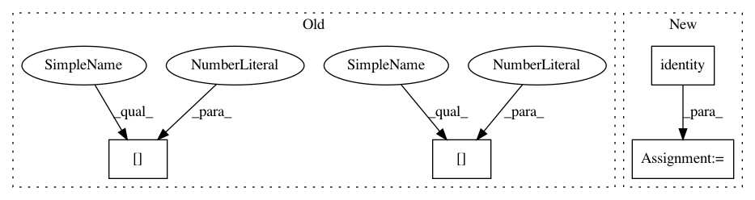

1453d07070a71f0f0d41a6d9424aa46fc27a5cee,research/learning_to_remember_rare_events/model.py,Model,predict,#Model#Any#Any#Any#,244
Before Change
ret = sess.run(outputs, feed_dict={self.x: x, self.y: y})
sess.run([self.mem_reset_op],
feed_dict={self.mem_keys_reset: cur_memory[0],
self.mem_vals_reset: cur_memory[1],
self.mem_age_reset: cur_memory[2]})
return ret
After Change
// Storing current memory state to restore it after prediction
mem_keys, mem_vals, mem_age, _ = self.memory.get()
cur_memory = (
tf.identity(mem_keys),
tf.identity(mem_vals),
tf.identity(mem_age),
None,
)
outputs = [self.y_preds]
if y is None:
ret = sess.run(outputs, feed_dict={self.x: x})
In pattern: SUPERPATTERN
Frequency: 3
Non-data size: 4
Instances
Project Name: tensorflow/models
Commit Name: 1453d07070a71f0f0d41a6d9424aa46fc27a5cee
Time: 2018-03-06
Author: mtdziubinski@gmail.com
File Name: research/learning_to_remember_rare_events/model.py
Class Name: Model
Method Name: predict
Project Name: tensorflow/models
Commit Name: 1453d07070a71f0f0d41a6d9424aa46fc27a5cee
Time: 2018-03-06
Author: mtdziubinski@gmail.com
File Name: research/learning_to_remember_rare_events/model.py
Class Name: Model
Method Name: episode_predict
Project Name: tensorflow/models
Commit Name: 1453d07070a71f0f0d41a6d9424aa46fc27a5cee
Time: 2018-03-06
Author: mtdziubinski@gmail.com
File Name: research/learning_to_remember_rare_events/model.py
Class Name: Model
Method Name: predict
Project Name: tensorflow/models
Commit Name: 1498d9419b799c3df61d8a8b63a879dcbca4504e
Time: 2019-11-11
Author: YknZhu@users.noreply.github.com
File Name: research/deeplab/export_model.py
Class Name:
Method Name: main